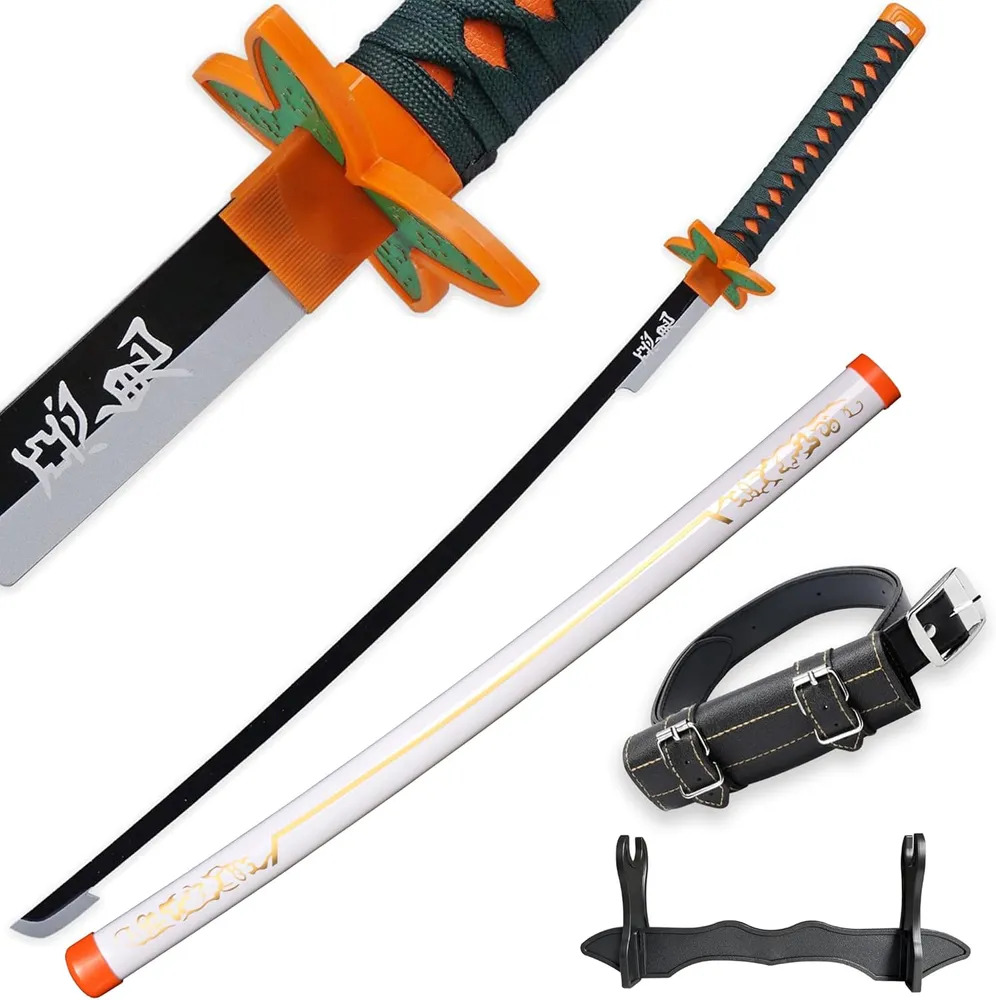

Катана Шинобу

Коллекционная катана с оранжевой рукоятью и оранжевой гардой, с зелеными вкраплениями. В комплекте — ножны, подставка и крепление на пояс.
Цена: 1000 руб.
Оформить заявкуХарактеристики товара
| Параметр | Значение |
|---|---|
| Тип | Коллекционная катана |
| Материал | Металл, дерево, ткань |
| Длина клинка | 70 см |
| Вес | 1,2 кг |
| Комплектация | Катана, ножны, подставка, крепление |